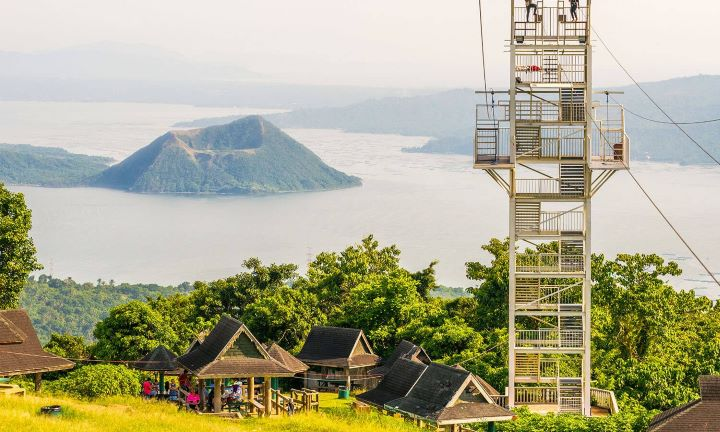

Welcome to Tagaytay
Tagaytay is a popular tourist destination in the Philippines, located just south of Manila. Known for its cool climate and stunning views, it sits on a ridge overlooking Taal Volcano, one of the world’s smallest active volcanoes, and its picturesque crater lake. Visitors flock to Tagaytay for its scenic landscapes, lush greenery, and relaxing ambiance. The city is famous for attractions like Picnic Grove, Sky Ranch, and People's Park in the Sky. Its proximity to the capital makes it a favorite getaway spot for both locals and tourists looking to enjoy the natural beauty and cool air.
